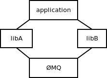
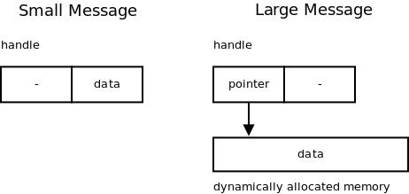
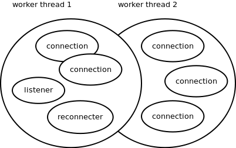
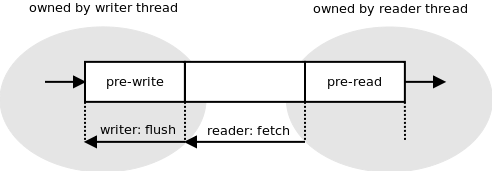

0MQ is a messaging system, or a "message-oriented middleware" if you will. It's used in environments as diverse as financial services, game development, embedded ssytems, academic research and aerospace.
Messaging systems work basically as instant messaging for applications. An application decides to communicate an event to another application (or multiple applications), it assembles the data to be sent, hits the "send" button and there we go, the messaging system takes care of the rest.
Unlike instant messaging though, messaging systems have no GUI and assume no human beings at the endpoints capable of intelligent intervention when something goes wrong. Messaging systems thus have to be both fault tolerant and much faster than common instant messaging.
0MQ project was originally conceived as an ultra-fast messaging system for stock trading and so the focus was on extreme optimisation. The first year of the project was spent devising benchmarking methodology and drafting the most efficient architecture possible.
Later on, approximately in the second year of development, the focus shifted to providing a generic system for building distributed applications, supporting arbitrary messaging patterns, various transport mechanisms, arbitrary language bindings etc.
During the third year the focus was mainly on the usability and on the flattening the learning curve. We've adopted BSD socket API, tried to clean up the semantics of individual messaging patterns and so on.
Hopefully, this chapter will give an insight into how the three goals above translated into the internal architecture of 0MQ and provide some tips for those who are struggling with the same problems.
Since then 0MQ project have outgrown its codebase. There is an initiative to standardise the wire protocols it uses. There is an experimental implementation of 0MQ-like messaging system inside Linux kernel etc.
These topics are not covered in this book. However, you can check online resources [[footnote]]http://www.250bpm.com/concepts[[/footnote]][[footnote]]http://groups.google.com/group/sp-discuss-group[[/footnote]][[footnote]]http://www.250bpm.com/hits[[/footnote]] for further details.
0MQ is a library. It seems to be a trivial fact, however, it took us several years working on AMQP protocol, writing a reference implementation for it and participating in several large-scale projects heavily based on messaging technology to realise that there's something wrong with the classic client/server model of smart messaging server (broker) and dumb messaging clients.
Our primary concern at the time was with the performance: If there's a server in the middle, each message has to pass the network twice (from the sender to the broker and from the broker to the receiver) inducing a penalty in terms of both latency and throughput. Moreover, if all the messages are passed through the broker, at some point it's bound to become the bottleneck.
Secondary concern was related to large-scale deployments. When there are several servers involved, say one server per branch office, or even servers in different firms, the whole idea of central authority managing the message flows becomes blurred and leads to all kinds of problems.
0MQ project was started when we've got an idea of how to make messaging work without a central server. It required turning the whole concept of messaging upside down and replacing the model of an autonomous, centralised store of messages in the center of the network with a "smart endpoint, dumb network" architecture based on the end-to-end principle[[footnote]]http://en.wikipedia.org/wiki/End-to-end_principle[[/footnote]].
The technical consequence of that decision was that 0MQ, from the very beginning, was a library, not an application.
In the meantime we've been able to prove that this architecture is both more efficient (lower latency, higher throughput) and more flexible (it's easy to build arbitrary complex topologies instead of being tied to a classic hub-and-spoke model).
One of the unintended consequences, however, was that opting for the library model improved the usability of the product. Over and over again users express their happiness about the fact that they don't have to install and manage a stand-alone messaging server. It turns out that not having a server is a preferred option as it cuts operational cost (no need to have a messaging server admin) and improves time-to-market (no need to negotiate the need to run the server with the client, the management or the operations team).
The lesson learned is that when starting a new project, you should opt for the library design if at all possible. It's pretty easy to create an application from a library by invoking it from a trivial program, however, it's almost impossible to create a library from the existing executable. A library offers much more flexibility to the users, at the same time sparing them non-trivial administrative effort.
Global variables don't play well with libraries. Library may be loaded several times to the process (see picture below) but even then there's only a single set of global variables.
When such a situation occurs, both instances of the library access same variables resulting in race conditions, strange failures and undefined behaviour.
Think of a function that initialises the library: It's called twice, once from libA, second time from libB. The second call encounters the library in the initialised state. Duplicate initialisation is likely to lead to resource leaks. Thus we need a global flag to signalise the condition. However, both initialisation calls can access the flag at the same time. Consequently, we have to place it into a critical section. The problems span on and on. Every piece of global data is a source of possible contention between two instances of the library.
To prevent this problem 0MQ library has no global variables. Instead, user of the library is responsible for creating the global state explicitly. Object containing the global state is called "context". While from the users perspective context looks more or less like a pool of worker threads, from 0MQ's perspective it's just an object to store any global state that we happen to need. When you look at the picture above, libA would have its own context and libB would have its own as well. There would be no way for one of them to break or subvert the other one.
The lesson here is pretty obvious: Don't use global state in libraries. If you fail to do so, the library is likely to break when it happens to be instantiated twice in the same process.
The primary goal of 0MQ when the project was started was the best possible performance.
Performance of messaging systems is expressed using two metrics: throughput, i.e. how many messages can be passed during a given amount of time, and latency, i.e. how long it takes for a message to get from one endpoint to the other.
Which metric should we focus on? What's the relationship between the two?
Isn't it easy? Run the test, divide the overall time of the test by number of messages passed and what you get is latency. Divide the number of messages by time and what you get is throughput. In other words, latency is inverse value of throughput. Trivial, right?
Instead of starting coding straight away we'd spent some weeks on investigating the performance metrics in detail and we'd found out that the relationship between throughput and latency is much more subtle than that and often the metrics are quite counter-intuitive.
Imagine A sending messages to B. Here's the sequence diagram:
The overall time of the test is 6 seconds. There are 5 messages passed.
The throughput is 0.83 msgs/sec (6/5) and the latency is 1.2 sec (5/6), right?
Have a look at the diagram again. It takes a different time for each message to get from A to B: 2 sec, 2.5 sec, 3 sec, 3.5 sec, 4 sec. The average is 3 seconds, which is pretty far away from our original estimate of 1.2 second.
Now have a look at the throughput. The overall time of test is 6 seconds. However, at A it takes just 2 seconds to send all the messages. From A's perspective the throughput is 2.5 msgs/sec (5/2). At B it takes 4 seconds to receive all messages. So, from B's perspective the throughput is 1.25 msgs/sec (5/4). None of these numbers matches our original estimate of 1.2 msgs/sec.
To make the long story short: Latency and throughput are two different metrics. Latency can be measured only between two different points in the system. There's no such thing as latency at point A. Each message has its own latency. You can average the latencies of multiple messages, however, there's no such thing as latency of a stream of messages. Throughput, on the other hand, can be measured only at a single point of the system. There's a throughput at the sender, there's a throughput at the receiver, there's a throughput at any intermediate point between the two, however, there's no such thing as overall throughput of the whole system. Throughput make sense only for a set of messages. There's no such thing as throughput of a single message.
As for the relationship between throughput and latency it turns out there really is a relationship, however, the formula involves integrals and we won't discuss it here. For more information check literature on queueing theory[[footnote]]http://en.wikipedia.org/wiki/Queueing_theory[[/footnote]].
There are many more pitfalls in benchmarking a messaging system that we won't go further into. The stress should rather be placed on the lesson learned: Make sure you understand the problem you are solving. Even a problem as simple as "make it fast" can take lot of work to understand properly. What's more, if you don't understand the problem, you are likely to build implicit assumptions and popular myths into your code, making the solution either flawed or at least much more complex or much less useful than it can possibly be.
It turned out during the optimisation that three aspects have crucial impact on the performance:
However, when you think about it, it's not like every memory allocation or every system call has the same effect on the performance.
The performance we are interested in in messaging systems is how many messages we can transfer between two endpoints during a given amount of time. Alternatively, we may be interested in how long it takes for a message to get from one endpoint to another.
However, the time it takes to establish a connection or the time needed to handle an error is basically irrelevant. These events happen very rarely and so their impact on overall performance is negligible.
The part of the codebase that gets used very frequently, over and over again is called the critical path. The optimisation should focus on the critical path.
Let's have a look at an example: 0MQ is not extremely optimised with respect to memory allocations. For example, when manipulating strings, it often allocates a new string for each intermediate phase of the transformation. However, if we look strictly at the critical path (the actual message passing) we'll find out that it uses almost no memory allocations. If messages are small, it's just one memory allocation per 256 messages (these messages are held in a single large allocated memory chunk). If, in addition, the stream of messages is steady, without huge traffic peaks, the number of memory allocations on the critical path drops to zero (the allocated memory chunks are not returned to to the system, but re-used over and over again).
Lesson learned: Optimise where it makes difference. Optimising pieces of code that are not on the critical path is wasted effort.
Assuming that all the infrastructure was initialised and connection between the two endpoints has been established, there's only one thing to allocate when sending a message -- the message itself. Thus, to optimise the critical path, we had to look into how messages are allocated and passed up and down the stack.
It's common knowledge in high-performance networking area that best performance is achieved by carefully balancing cost of message allocation and cost of message copying [[footnote]]for example: http://hal.inria.fr/docs/00/29/28/31/PDF/Open-MX-IOAT.pdf, see different handling of "small", "medium" and "large" messages.[[/footnote]]. For small messages copying is much cheaper than allocating memory. It makes sense to allocate no new memory chunks at all and instead to copy the message to a preallocated memory whenever needed. For large messages, on the other hand, copying is much more expensive than memory allocation. It makes sense to allocate the message once and pass the pointer to the allocated block, instead of copying the data. This approach is called "zero-copy" in the literature.
0MQ handles both cases in a transparent manner. 0MQ message is represented by an opaque handle. Content of very small messages is encoded directly into the handle. So, making a copy of the handle actually copies the message data. When the message is larger, it's allocated in separate buffer and the handle contains just a pointer to the buffer. Making copy of the handle doesn't result in copying the message data, which makes a lot of sense, especially when the message is megabytes long. It should be noted that in the latter case the buffer is reference counted so that it can be referenced by multiple handles without a need for copying the data.
Lesson learned: When thinking about performance, don't assume there's a single best solution. It may happen that there are several subclasses of the problem (e.g. small messages vs. large messages) each having it's own optimal algorithm.
It has already been mentioned that the sheer number of system calls in a messaging system can result in a performance bottleneck. Actually, the problem is much more generic than that. There's a non-trivial performance penalty associated with traversing the call stack and thus, when creating high-performance applications, it's wise to avoid as much stack traversing as possible. Consider the following diagram:
To send four messages, you have to traverse entire network stack four times (e.g. 0MQ, glibc, user/kernel space boundary, TCP implementation, IP implementation, Ethernet layer, the NIC itself and back again up the stack). However, if you decide to join those messages into a single batch, there would be only one traversal of the stack:
The impact on message throughput can be overwhelming, especially if the messages are small and hundreds of them can be packed into a single batch.
On the other hand, batching can have negative impact on latency. Let's take an example of the well-known Nagle's algorithm [[footnote]]http://en.wikipedia.org/wiki/Nagle%27s_algorithm[[/footnote]] , as implemented in TCP. It delays the outbound messages for certain amount of time and merges all the accumulated data into a single packet. Obviously, the end-to-end latency of the first message in the packet is much worse than the latency of the last one. Thus, it's common for applications that need consistently low latency to switch Nagle's algorithm off. It's even common to switch off the batching on all levels of the stack (e.g. NIC's interrupt coalescing feature).
But again: No batching means extensive traversing of the stack and results in low message throughput. We seem to be caught in throughput vs. latency dilemma.
0MQ tries to deliver consistently low latencies combined with high throughput using the following idea: When message flow is sparse and doesn't exceed network stack's bandwidth, 0MQ turns all the batching off to deliver best possible latency. The trade-off here is somewhat higher CPU usage -- we still have to traverse the stack frequently. However, that isn't considered to be a problem in most cases.
When the message rate exceeds the bandwidth of the network stack, the messages have to be queued -- stored in memory till the stack is ready to accept them. Queueing means the latency is going to grow. If the message spends one second in the queue, end-to-end latency will be at least one second. What's even worse, as the size of the queue grows, latencies will increase gradually. If the size of the queue is not bound, the latency can exceed any limit.
It has been observed that even though the network stack is tuned for lowest possible latency (Nagle's algorithm switched off, NIC interrupt coalescing turned off etc.) latencies can still be dismal because of the queueing effect, as described above.
In such situation it makes sense to start batching aggressively. There's nothing to lose as the latencies are already high anyway. On the other hand, aggressive batching improves throughput and can empty the queue of pending messages -- which in turn means the latency will gradually drop as the queueing delay decreases. Once there are no outstanding messages in the queue, the batching can be turned off to improve the latency even further.
One additional observation is that the batching should only be done on the topmost level. If the messages are batched there, the lower layers have nothing to batch anyway, and so all the batching algorithms underneath do nothing except introducing additional latency.
Lesson learned: To get optimal throughput combined with optimal response time in an asynchronous system, turn off all the batching algorithms on the low layers of the stack and batch on the topmost level. Batch only when new data are arriving faster than they can be processed.
One of the requirements for 0MQ was to take advantage of multi-core boxes, in other words, to scale the throughput linearly with number of available CPU cores.
Our previous experience with messaging systems showed that using multiple threads in a classic way (critical sections, semaphores etc.) doesn't yield much performance improvement. In fact, multi-threaded version of a messaging system can be slower than a single-threaded one, even if measured on a multi-core box. Individual threads are simply spending too much time waiting for each other while, at the same time, eliciting a lot of context switching that slows the system down even further.
Given these problems, we've decided to go for a different model. The goal was to avoid locking entirely and let each thread run at the full speed. The communication between threads was to be provided via asynchronous messages (events) passed between the threads. This, as insiders know, is the classic actor model [[footnote]]http://en.wikipedia.org/wiki/Actor_model[[/footnote]].
The idea was to launch one worker thread per CPU core -- having two threads sharing the same core would only mean a lot of context switching for no particular advantage. Each internal 0MQ object, such as say TCP connection, would be tightly bound to a particular worker thread. That, in turn, means that there's no need for critical sections, mutexes, semaphores and alike. Additionally, these 0MQ objects won't be migrated between CPU cores thus avoiding the negative performance impact of the cache pollution:
This design makes a lot of traditional multi-threading problems disappear. Nevertheless, there's a need to share the worker thread among many objects, which, in turn, means there has to be some kind of cooperative multitasking, a scheduler, objects need to be event-driven rather than being in control of the entire event loop, we have to take care of arbitrary sequences of events, even very rare ones, we have to make sure that no object holds the CPU for too long etc.
In short, whole system has to become fully asynchronous. No object can afford to do a blocking operation, because it would not only block itself but also all other objects sharing the same worker thread. All objects have to become, whether explicitly or implicitly, state machines. With hundreds or thousands of state machines running in parallel you have to take care of all the possible interactions between them and -- most importantly -- of the shutdown process.
It turns out that shutting down a fully asynchronous system in a clean way is a dauntingly complex task. It's prone to all kinds of race conditions, resource leaks and similar. The shutdown subsystem is definitely the most complex part of 0MQ.
Lesson learned: When striving for extreme performance and scalability, consider the actor model. It's almost the only game in town in such case. However, if you are not using specialised system like Erlang, or 0MQ itself, you'll have to write and debug a lot of infrastructure by hand. Additionally, think about shutting down the system from the very beginning. It's going to be the most complex part of the codebase and if you have no clear idea how to implement it, you should probably reconsider using the actor model in the first place.
Lock-free algorithms have been en vogue lately. They are simple mechanisms for inter-thread communication that don't rely on the kernel-provided synchronisation primitives, such as mutexes or semaphores, rather, they do the synchronisation using atomic CPU operations, such as atomic compare-and-swap. It should be understood that they are not literally lock-free. Instead, locking is done behind the scenes on the hardware level.
0MQ uses a lock-free queue to pass messages between user's threads and 0MQ's worker threads. There are two interesting aspects to how 0MQ uses the lock-free queue:
First, each queue has exactly one writer thread and exactly one reader thread. If there's a need for 1-to-N communication, multiple queues are created:
Given that this way the queue doesn't have to take care of synchronising the writers (there's only one writer) or readers (there's only one reader) it can be implemented in extra efficient way.
Second, we've realised that while lock-free algorithms were more efficient that classic mutex-based algorithms, atomic CPU operations were still rather expensive (especially when there's contention between CPU cores) and doing an atomic operation for each message written and/or each message read was slower than we were willing to accept.
The way to speed it up was -- once again -- batching.
Imagine you had 10 messages to be written to the queue. It can happen, for example, when you received a network packet containing 10 small messages. Receiving a packet is an atomic event, you simply cannot get just a half of it. This atomic event results in need to write 10 messages to the lock-free queue. There's no much point in doing an atomic operation for each message. Instead, you can accumulate the messages in a "pre-write" portion of the queue that's accessed solely by the writer thread and then flush it using a single atomic operation.
Same applies to reading from the queue. Imagine the 10 messages above were already flushed into the queue. Reader thread can extract each message from the queue using an atomic operation. However, it's an overkill. Instead, it can move all the pending messages to a "pre-read" portion of the queue using a single atomic operation. Afterwards, it can pick the messages from the "pre-read" buffer one by one. "Pre-read" is owned and accessed solely by the reader thread and thus no synchronisation whatsoever is needed in that phase.
The arrow on the left shows how pre-write buffer can be flushed to the queue simply by modifying a single pointer. Arrow on the right shows how the whole content of the queue can be shifted to the pre-read by doing nothing but modifying another pointer.
Lesson learned: Lock-free algorithms are hard to invent, troublesome to implement and almost impossible to debug. If at all possible, use an existing proven algorithm rather than inventing your own. When extreme performance is required, don't rely solely on lock-free algorithms. While they are fast, the performance can be significantly improved by doing smart batching on top of them.
User interface is the most important part of any product. It's the only part of your program visible to the outside world and if you get it wrong the world will hate you. In end-user products it's either GUI or command line. In libraries it's the API.
In early versions of 0MQ the API was based on AMQP's model of exchanges and queues [[footnote]]See the AMQP specification here: https://www.amqp.org/confluence/download/attachments/720900/amqp0-9-1.pdf . From historical perspective it's interesting to have a look at the whitepaper from 2007 that tries to reconcile AMQP with brokerless model of messaging: http://www.zeromq.org/whitepapers:messaging-enabled-network .[[/footnote]]. I've spent the end of year 2009 rewriting it almost from scratch to use BSD socket API [[footnote]]http://en.wikipedia.org/wiki/Berkeley_sockets[[/footnote]] instead. That was the turning point. 0MQ adoption soared from that point on. While before it was a niche product used by a bunch of messaging experts, afterwards it became a handy commonplace tool for anybody. In a year or so the size of community have increased tenfold, some 20 bindings to different languages were implemented etc.
User interface defines the perception of the product. With basically no change to the functionality, just by changing the API, 0MQ have changed from "enterprise messaging" product to "networking" product. In other words, the perception changed from "a complex piece of infrastructure for big banks" to "hey, this helps me to send my 10 byte long message from application A to application B".
Lesson learned: Understand what you want your project to be and design the user interface accordingly. User interface that doesn't align with the vision of the project is a 100% guaranteed way to failure.
One of the important aspects of the move to BSD socket API was that it wasn't a revolutionary freshly-invented API, but an existing and well-known one. Actually, BSD socket API is one of the oldest APIs -- if not the oldest one -- still in active use today. It dates back to 1983 and 4.2BSD Unix. It's widely used and stable for literally decades.
The above fact brings a lot of advantages.
Firstly, it's an API that everybody knows, so the learning curve is ludicrously flat. Even if you never heard about 0MQ before, you can build your first application in couple of minutes thanks to the fact that you are able to reuse your BSD socket knowledge.
Secondly, using a widely implemented API enables integration of 0MQ with existing technologies. For example, exposing 0MQ objects as "sockets" or "file descriptors" allows for processing TCP, UDP, pipe, file and 0MQ events in the same event loop. Another example: The experimental project to bring 0MQ-like functionality to Linux kernel [[footnote]]https://github.com/250bpm/linux-2.6[[/footnote]] turned out to be pretty simple to implement. By sharing the same conceptual framework it can re-use a lot of infrastructure already in place. Additionally, by reusing the APIs that's already exported from the kernel it requires to change to existing APIs/ABIs.
Thirdly and probably the most importantly, the fact that BSD socket APIs survived almost three decades despite the numerous attempts to replace it, means that there is something inherently right in the design. BSD socket API designers have -- whether deliberately or by chance -- made the right design decisions. By adopting the API we can automatically share those design decisions without even knowing what they were and what problem they were solving.
The last point may seem to be a bit vague, so let's have a look at couple of BSD socket design decisions that proved useful for 0MQ as well:
First, BSD socket API is a straightforward library API: a set of functions to be called by the user. Some modern APIs adopt inversion of control [[footnote]]http://en.wikipedia.org/wiki/Inversion_of_control[[/footnote]] or so called "don't call us, we'll call you" [[footnote]]http://en.wikipedia.org/wiki/Hollywood_Principle[[/footnote]] model, where user's callback functions are invoked when a particular event, such as a message arriving, happens. You may think of it as library vs. framework issue. Library is something that's under your control. Framework, on the other hand, is something that you are controlled by.
The problem with the latter is that it imposes the way how the program should work on you. If you want to do something different, you are stuck. Imagine merging two applications that were written using two different frameworks into a single application. Each framework imposes it's own model on how the application should work resulting in unresolvable clash. There's no such problem with the libraries though.
Thinking about it in a different way, it's trivial to implement a framework using a library. However, it's pretty hard, if at all possible, to implement a library using a framework. Libraries are low-level technologies. Frameworks can be built on top of libraries.
Additionally, there's some anecdotal evidence that library-style APIs fare better than framework-style APIs: Adoption rate of POSIX AIO API [[footnote]]http://pubs.opengroup.org/onlinepubs/000095399/basedefs/aio.h.html[[/footnote]] is pretty low. AIO for network sockets is not even implemented in Linux. There's some adoption of Windows IOCP API [[footnote]]http://msdn.microsoft.com/en-us/library/aa365198%28VS.85%29.aspx[[/footnote]], however, my feeling is that it can be attributed to the fact that classic BSD socket API is deliberately crippled on Windows and thus not suitable for more complex tasks, making IOCP the only viable option.
Second, BSD socket API deals only with data transfer. It doesn't provide a way to set and manage network policies. This design results in clean separation of mechanism and policy [[footnote]]http://en.wikipedia.org/wiki/Separation_of_mechanism_and_policy[[/footnote]]. That in turn results in unprecedented stability of BSD socket API.
The network have changed significantly since 1983 (less than 1000 RFCs back than, more than 6000 RFCs in 2011), however, application still use the same API to send and receive the data. The stability of the API means that application developers take the API for granted. They don't think for a slightest moment about availability or stability problems. It also means that the implementations of the API have become a commodity and are available for free whatever platform or language you are working with.
From a different point of view, strict decoupling of data transfer from network management liberated network infrastructure from the tight control exercised by the applications. Network infrastructure can evolve without messing with the existing applications. And, as everyone knows, during the past decades it really did evolved creating a billion dollar industry on its way.
Lesson learned: While code reuse have been promoted from the times unmemorable and pattern reuse [[footnote]]http://en.wikipedia.org/wiki/Design_pattern_%28computer_science%29[[/footnote]] have joined the suite later on, it's important to think of reuse in even more generic way. When designing a product have a look at similar products. Check which have failed and which have succeeded. Learn from the successful projects. Don't succumb to the NIH syndrome [[footnote]]http://en.wikipedia.org/wiki/Not_Invented_Here[[/footnote]] . Reuse the ideas, the APIs, the conceptual frameworks, whatever you find appropriate. By doing so you are allowing users to reuse their existing knowledge. At the same time you are avoiding technical pitfalls you may not even be aware of at the moment.
In any messaging system, the most important design problem is how to provide a way for the user to specify which messages are routed to which destinations.
There are two main approaches and I believe this dichotomy is quite generic and applicable to basically any problem encountered in the domain of software.
One approach is to adopt the UNIX philosophy [[footnote]]http://en.wikipedia.org/wiki/Unix_philosophy[[/footnote]] of "do one thing and do it well". What it means is that the problem domain should be artificially restricted to a small and well understood area. The program should then solve this restricted problem in a correct and exhaustive way. An example of such approach in messaging area is MQTT [[footnote]]http://mqtt.org/[[/footnote]]. It's a protocol for distributing messages to a set of consumers. It can't be used for anything else (say for RPC) but it is easy to use and does message distribution well.
The other approach is to focus on generality and to provide a powerful and highly configurable system. AMQP is an example of such a system. Its model of queues and exchanges provides the user with the means to programatically define almost any routing algorithm he can think of. The trade-off, of course, is a lot of levers and options to take care of.
0MQ opts for the former, UNIX, model and it does so for following reasons:
While the above discussion may seen to be purely theoretical, having little impact on the users, let's have a look how this design decision affects the user code. What follows is implementation RPC on top of a generic system (AMQP). The pseudocode for the service looks like this:
# Set up the infrastructure
exchange.create (exchange="requests", type="direct", passive=false,
durable=true, no-wait=true, arguments={})
exchange.create (exchange="replies", type="direct", passive=false,
durable=true, no-wait=true, arguments={})
queue.declare (queue="my-service", passive=false, durable=true,
exclusive=false, auto-delete=false, no-wait=true, arguments={})
queue.bind (queue="my-service", exchange="requests",
routing-key=service-name)
queue.consume (queue="my-service", consumer-tag="", no-local=false,
no-ack=false, exclusive=false, no-wait=true, arguments={})
# Process one request
request = get-message ()
reply = new-message ("World")
reply.correlation-id = request.correlation-id
basic.publish (exchange="replies", routing-key=msg.reply-to,
mandatory=false, immediate=false)
The pseudocode for the client:
# Set up the infrastructure
exchange.create (exchange="requests", type="direct", passive=false,
durable=true, no-wait=true, arguments={})
exchange.create (exchange="replies", type="direct", passive=false,
durable=true, no-wait=true, arguments={})
reply-queue = queue.declare (queue="", passive=false, durable=false,
exclusive=true, auto-delete=true, no-wait=false, arguments={})
queue.bind (queue=reply-queue, exchange="replies",
routing-key=reply-queue)
queue.consume (queue=reply-queue, consumer-tag="", no-local=false,
no-ack=false, exclusive=true, no-wait=true, arguments={})
# Send a request and receive a reply
request = new-message ("Hello")
request.reply-to = reply-queue
request.correlation-id = generate-unique-id ()
basic.publish (exchange="requests", routing-key="my-service",
mandatory=true, immediate=false)
request = get-message ()
0MQ, on the other hand, opts for the "do one thing and do it well" approach. It splits the messaging landscape into so called "messaging patterns". Examples of the patterns are "publish/subscribe", "request/reply" or "parallelised pipeline". Each messaging pattern is completely orthogonal to other patterns and can be thought of as a separate tool.
What follows is the re-implementation of the above application using the 0MQ's request/reply pattern. As can be seen it is order of magnitude simpler that the generic approach. The pseudocode for the service part looks like this:
# Set up the infrastructure
s = socket (REP)
s.bind ("tcp://*:5555")
# Process one request
request = s.recv ()
s.send ("World")
And here's the pseudocode for the client:
# Set up the infrastructure
s = socket (REQ)
s.connect ("tcp://192.168.0.111:5555")
# Send a request and receive a reply
s.send ("Hello")
reply = s.recv ()
Up to this point we've argued that specific solutions are better than generic solutions. We want our solution to be as specific as possible. However, at the same time we want to provide our customers with as wide range of functionality as possible. How can we solve this apparent contradiction?
The answer consists of two steps:
Let's have a look at the example of the transport layer in the Internet stack. It's meant to provide services such as transferring data streams, applying flow control, providing reliability etc. on the top of the network layer (IP). It does so by defining multiple non-intersecting solutions: TCP for connection-oriented reliable stream transfer, UDP for connectionless unreliable packet transfer, SCTP to transfer of multiple streams, DCCP for unreliable connections and so on.
Note that each implementation is completely orthogonal: UDP endpoint cannot speak to TCP endpoint. Neither can SCTP endpoint speak to DCCP endpoint. It means that new implementations can be added to the stack at any moment without affecting the existing portions of the stack. Other way round, failed implementations can be forgotten or discarded without compromising the viability of transport layer as a whole.
Same principle applies to messaging patterns as defined by 0MQ. Messaging patterns form a layer (so called "scalability layer") on top of the transport layer (TCP and friends). Individual patterns are implementations of this layer. They are strictly orthogonal -- publish/subscribe endpoint can't speak to request/reply endpoint etc. Strict separation between the patterns in turn means that new patterns can be added as needed and that failed experiments with new patterns won't hurt the existing patterns.
Lesson learned: When solving a complex and multi-faceted problem it may turn out that a monolithic general-purpose solution may not be the best way to go. Instead, we can think of the problem area as an abstract layer and provide multiple implementations of this layer, each focused on a specific well-defined use case. When doing so, delineate the use case carefully. Be sure about what is in the scope and what is not. By restricting the use case too aggressively the application of your software may be limited. If you define the problem too broadly, however, the product may become too complex, blurry and confusing for the users.
This text doesn't cover the architecture of 0MQ in full. It deliberately omits issues like the protocol design or integration with the OS kernel. Instead it focuses on problems that are interesting from software architecture point of view and we hope that designers and programmers in open source community will find it useful.